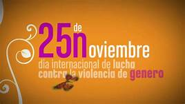

La no violencia consiste en la negativa a dañar físicamente a otros seres humanos bajo ninguna
circunstancia. Aunque se base a menudo en principios morales o religiosos, la no violencia es también
una estrategia para conseguir cambios políticos o sociales. Para los activistas no violentos, la no
violencia es una tercera vía entre la aceptación de la opresión y la rebelión violenta contra la
opresión.
En el siglo XX, las dos figuras más representativas de la no violencia fueron Mahatma Gandhi y Martin
Luther King. Aunque ambos fueron asesinados, ambos ganaron las batallas de sus vidas: la independencia
de la India y el reconocimiento de los derechos civiles de los negros norteamericanos.
Mahatma Gandhi
Gandhi
Mohandas Karamchand Gandhi (2 de octubre de 1869 – 30 de enero de 1948) fue el líder del
movimiento de independencia
indio contra el dominio británico. Mediante la desobediencia civil no violenta, Gandhi condujo a la
India a la
independencia e inspiró movimientos de derechos civiles y liberación en todo el mundo. El título
honorífico de
Mahatma (venerable, en sánscrito) se le empezó a aplicar en 1914 en Sudáfrica.
Nacido en Gujarat (India occidental), estudió abogacía en Londres y organizó las primeras
acciones de desobediencia
civil en Sudáfrica , dirigiendo la lucha de la comunidad india por sus derechos civiles. En
1915 volvió a la India y
organizó las protestas de campesinos, granjeros y obreros urbanos en contra de los impuestos excesivos y
la
discriminación. En 1921 alcanzó el liderazgo del Congreso Nacional Indio, desde el que dirigió campañas
contra la
pobreza y el sistema de castas, por los derechos de las mujeres y la tolerancia religiosa, pero sobre
todo para
conseguir el autogobierno.
El día de su cumpleaños, el 2 de octubre, se celebra el Día Internacional de la No violencia.
Martin Luther King, Jr.
Martin Luther King, Jr. (15 de enero de 1929 – 4 de abril de 1968) fue un sacerdote baptista americano,
activista y
líder del movimiento de derechos civiles afroamericano, famoso por su papel en el avance de los derechos
civiles
mediante desobediencia civil no violenta, basada en sus creencias cristianas.
Desde 1986, el Día de Martin Luther King Jr, el tercer lunes de enero, es un día festivo nacional en
Estados Unidos.
Pero las tensiones raciales nunca se han resuelto en Estados Unidos y prueba de ello es que esta fecha
no se festejó
en todos los estados hasta el año 2000.
Pinta el mundo de naranja

El 25 de noviembre se conmemora el Día Internacional de la Eliminación de la Violencia contra la Mujer,
designado
como tal por la Asamblea General de las Naciones Unidas el 17 de diciembre de 1999. Se escogió esta
fecha para
honrar a las hermanas Mirabal, tres activistas políticas de la República Dominicana que fueron
brutalmente
asesinadas en 1960 durante la dictadura de Rafael Trujillo (1930-1961).
Desde la ONU se hace un llamamiento para que desde hoy, 25 de noviembre, y hasta el 10 de diciembre, Día
de los
Derechos Humanos, la ciudadanía participe en la campaña: “Pinta tu mundo de naranja” y
ÚNETE para poner fin a la
violencia contra las mujeres.
Nelson Mandela escribió:
"La libertad no se logrará hasta que las mujeres consigan emanciparse de todas las formas de opresión"